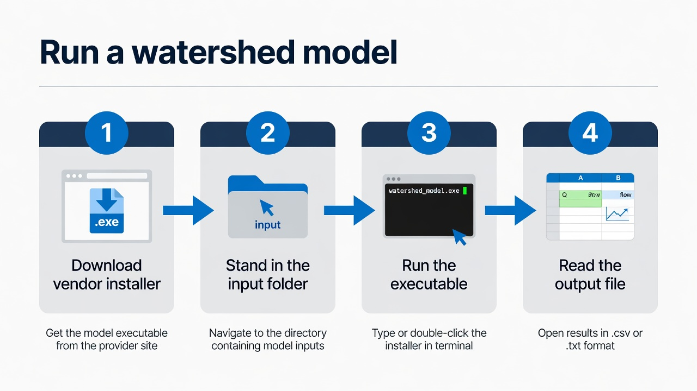

DayCent
DayCent is on the lab Model page because we use it in research, but it is not in the pinned Windows tree at C:\Grok\Models\installs. There is no local golden CLI on this host.

1. Get the software
Download DayCent from the Soil Carbon Solutions Center at Colorado State University.
2–4. Execute
Use the CSU package’s own driver and example. Until a DayCent install is pinned under C:\Grok\Models\installs, the lab does not claim a verified local command line.